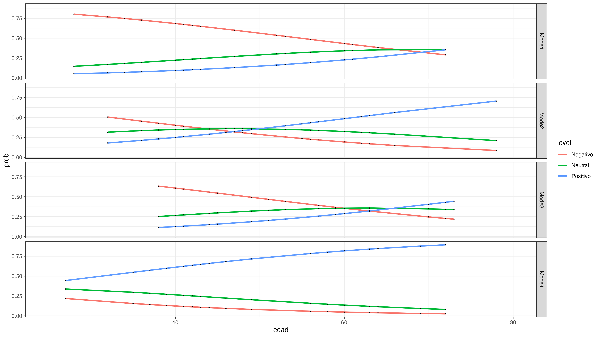
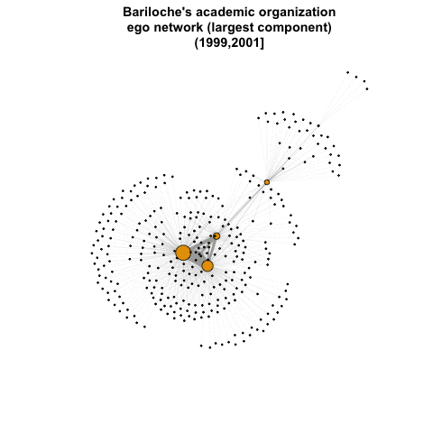
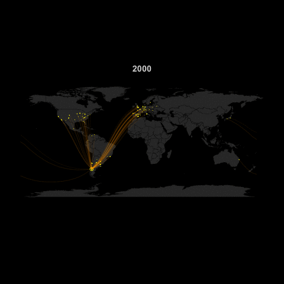
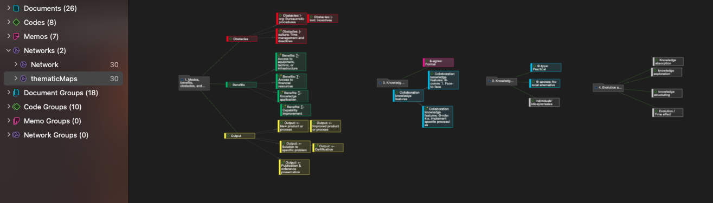
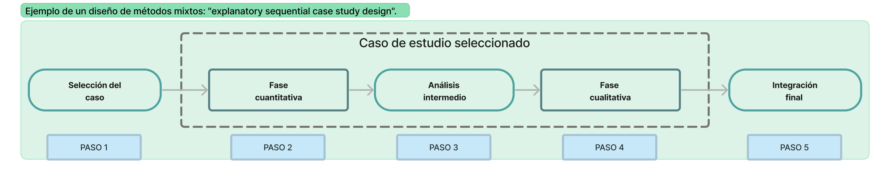

A lo largo de mi formación y mi carrera profesional desarrollé múltiples capacidades relacionadas al manejo de diversas metodologías y herramientas, tanto cuantitativas como cualitativas, así como competencias blandas o soft skills. Hago aquí una breve enumeración de las habilidades más relevantes que ha puesto en práctica en los últimos tiempos y podrían ser de utilidad para organizaciones de distintos ámbitos.
Habilidades técnicas
Análisis de datos cuantitativos
La capacidad de identificar y cuantificar patrones con precisión matemática en diversos contextos es esencial por su gran relevancia y poder transformador.
📌 Análisis estadístico.
Mi relación con la estadística se remonta a más de 10 años, desde mi primera clase en la Universidad de Buenos Aires. Más allá de mi interés conceptual y análisis en entornos de investigación, he aplicado mis conocimientos durante mi tiempo en la CEPAL, donde contribuí al desarrollo de un índice de precios al consumidor (IPC)y otros indicadores económicos en colaboración con organizaciones gubernamentales argentinas.
Más recientemente, en el marco de mi tesis doctoral, trabajé en modelos de variables categóricas, binomiales y multinomiales, para analizar datos de encuesta online, que no sólo analicé sino también diseñé y distribuí utilizado Qualtrics. El análisis final de la tesis usé una versión compleja de proportional odds model (McCullagh 1980), que permite representar variables categóricas ordinales (tipo escala Likert) como variable dependiente. Únicamente a modo ilustrativo, el siguiente gráfico muestra como diferentes nivel de satisfacción, asociados a distintos modos de colaboración, varían según la edad de los colaboradores.
Code
# Full model plots: appending fitted response probabilities (or logits) to the data frame and plotting these in relation to the predictors.#using the predict() fuction with option type = "probs" to get probabilities instead the highest probability categorycollab_DF <-cbind(collaborators %>% dplyr::select(Q15_1_collapsed, edad, chann), predict(om_151, type ="probs"))# long format data for plottingplot_dat <- collab_DF %>%pivot_longer(c(Negativo, Neutral, Positivo), names_to ="level", values_to ="prob")gg <-ggplot(plot_dat, aes(x = edad, y = prob, colour = level)) +geom_line(size =1) +theme_bw() +xlim(25, 80) +geom_point(color ="black", size =0.2) +facet_grid(chann ~ .) gg

📌 Análisis de redes sociales en R y Gephi.
Aunque mi enfoque principal ha sido el análisis estadístico, descriptivo e inferencial, también he explorado la teoría de grafos y el análisis de redes sociales. Si bien no lo he investigado en profundidad debido a las necesidades de mi tesis, he utilizado el paquete Bibliometrix y otros para medir las colaboraciones entre organizaciones académicas y empresariales a través de publicaciones conjuntas.
No fue exitoso dado que muy pocas empresas publican, pero sí sirvió para ver colaboraciones entre organizaciones académicas y practicar en el estudio de redes. Esto me permitió examinar las colaboraciones en el ámbito académico y practicar el análisis de redes. Así, por ejemplo, he podido representar la evolución de las colaboraciones en publicaciones académicas de diversas organizaciones de la ciudad de Bariloche, Argentina. A continuación dos representaciones gráficas de la colaboraciones en Bariloche, tanto en forma de red (izq.) como geográficas (der.). Si quieren ver resultados un poco más completos aquí una grabación de mi presentación en la Networks 2021: Joint Sunbelt & NetScie Conference.
Code
library(tidygeocoder)library(maps)library(mapdata)library(geosphere)library(geodist)library("animation") #### ILLUSTRATION CODE EXCERPTS FOR GIFS CREATION #### ## GRAPH A (left) ----# source: https://kateto.net/network-visualizationlibrary("igraph")local_g <-list()local_comp <-list()saveGIF({for (i in loop.vector) { vert <-V(g_list[[i]])[which(V(g_list[[i]])$bariloche ==1|V(g_list[[i]])$bariloche ==2)]#get edges connected to selected nodes: https://igraph.org/r/doc/incident_edges.html edg <-incident_edges(g_list[[i]], vert, "all") local <-ego(g_list[[i]], order =1, nodes = vert, mode ="all") local_g[[i]] <- igraph::subgraph.edges(g_list[[i]], eids =unlist(edg)) local_comp[[i]] <-decompose(local_g[[i]])V(local_comp[[i]][[1]])$deg <-degree(local_comp[[i]][[1]])E(local_comp[[i]][[1]])$width <-12*E(local_comp[[i]][[1]])$weight/max(E(local_comp[[i]][[1]])$weight) l =layout_with_fr(local_comp[[i]][[1]])plot(local_comp[[i]][[1]], vertex.size =1+V(local_comp[[i]][[1]])$deg/max(V(local_comp[[i]][[1]])$deg)*10, vertex.label ="", edge.width =E(local_comp[[i]][[1]])$width,layout = l, main =paste0("Bariloche's academic organization","\n", "ego network (largest component)" ,"\n",names(Mslice)[i]) )}},interval = .8, movie.name ="bch_institutional_animation.gif")#### GRAPH B (right) ----g <- g_list[[i]]# Join featuresg <-contract(g,factor(V(g)$name),vertex.attr.comb =list(name ="first", group ="mean", docs ="max", "random"))# attributes were merged: docs max as most of interactions are sharedg <-simplify(g, remove.loops=T, remove.multiple = T, edge.attr.comb =list(weight ="max"))# generate data frames of organizations and collaborationsun_geo_data = igraph::as_data_frame(g, what ='both') # affiliation network from bibliometrix as data frameorgs <- un_geo_data$vertices %>%mutate(lat =as.numeric(lat),long =as.numeric(long))# Keep collaborations only with egos from BCHun_geo_data$edges$width <-NULLcollabs <-as_tibble(un_geo_data$edges) %>%filter(from %in% vert$name | to %in% vert$name) # World Map (low quality, should be improved)map("world", col ="grey20", fill = T, bg ="black", lwd =0.1)title(paste(unique(orgs$year)), col.main ="lightgrey")#plot(gadm, col = myColours, border = 'grey')points(x = orgs$long, y=orgs$lat, cex = .04+orgs$docs/max(orgs$docs), col ="yellow")for(j in1:nrow(collabs)) { node1 <- orgs[orgs$name == collabs[j,]$from,] node2 <- orgs[orgs$name == collabs[j,]$to,]if (!is.na(node1$lat) &!is.na(node2$lat) & node1$lat != node2$lat) { arc <-gcIntermediate(c(node1[1,]$long, node1[1,]$lat), c(node2[1,]$long, node2[1,]$lat), n=30, addStartEnd=TRUE, breakAtDateLine = T, sp=T) edge.ind <-1# round(60*collabs[j,]$weight / max(collabs$weight))lines(arc, col=edge.col[edge.ind], lwd=edge.ind/5) }}}},interval = .5, movie.name ="bchDynamicInfoMap.gif")detach('package:animation')


Análisis de datos cualitativos
Además del enfoque cuantitativo, también he trabajado con métodos cualitativos. Si bien mi experiencia en este campo es más limitada, he ido descubriendo su gran potencial en el nivel detalle e información contextual que otorgan.
📌 Entrevistas y casos de estudio.
Había realizado entrevistas para mi tesis de maestría y, más recientemente, para mi tesis doctoral, analicé 26 entrevistas utilizando Atlas.ti. La preparación de entrevistas, el contacto con los entrevistados, la realización de las entrevistas y la transcripción son partes esenciales de este proceso (Rubin and Rubin 2011; Kvale 1994). Para el análisis utilicé un análisis temático (Braun and Clarke 2006) basado en una lista de códigos a priori, que luego actualicé con temas emergentes. El análisis de entrevistas puede ser un trabajo arduo pero proporciona información valiosa de múltiples individuos con experiencia directa en el tema de estudio. A continuación una captura de pantalla del proceso de análisis temático en Atlas.ti. En el futuro me entusiasma la idea de hacer focus groups.

Análisis de métodos mixtos
Tuve mi primer experiencia con métodos mixtos durante mi tesis doctoral, siguiendo a Creswell and Clark (2017) y Tashakkori, Teddlie, and Teddlie (1998). Más allá de su complejidad en el diseño e implementación, ofrece una alternativa que permite combinar lo mejor de lo cuantitativo y cualitativo, e incluso incorporar otras metodologías y marcos teóricos.
📌 Integración de datos cuantitativos y cualitativos.
En mi caso, adapté e implementé un “explanatory sequential case study design”. A partir de la selección de un caso de estudio particular, este diseño comienza por una fase cuantitativa para identificar patrones de comportamiento agregados. El análisis de estos resultados guía la subsiguiente fase de corte cualitativo, en la que se busca alcanzar una comprensión más profunda y matizada de los patrones agregados. Finalmente se integran los resultados de ambas fases, ofreciendo un producto más completo.

Habilidades blandas o “Soft Skills”
En complemento a esta lista de habilidades técnicas, también he desarrollado otras competencias sociales que son fundamentales para alcanzar objetivos, ya sea de manera individual o colectiva. Estas habilidades “blandas” o soft skills están asociadas, por ejemplo, a la comunicación y rasgos de personalidad que facilitan las relaciones interpersonales y un manejo inteligente con el entorno. A continuación una breve lista enumera las principales aptitudes en las que trabajo continuamente y considero valiosas para mi ecosistema profesional:
📌 Resolución de problemas complejos:
Me apasiona abordar problemáticas complejas y pensar soluciones concretas que eviten caer en propuestas simplistas y reduccionistas. Gracias a una actitud pro-activa y abierta para pensar ideas innovadoras busco diseñar soluciones sofisticadas, “out-of-the-box”, que no solo consideren las partes de un procesos sino también sus conexiones e interdependencias. En el diseño e implementación de mi tesis doctoral enfrenté todo tipo de problemáticas (metodológicas, de agenda, de limitación de recursos) que pude abordar y enmarcar para dar una respuesta integrada desde una perspectiva compleja.
📌 Comunicación flexible:
La comunicación efectiva es esencial en mi enfoque profesional. Ajusto el lenguaje técnico a términos comprensibles y adapto el formato del mensaje según el contexto y el receptor. Esto ha sido fundamental en mi rol de intermediario entre la academia y la industria.
📌 Trabajo colaborativo e independiente:
Elaborar y llevar adelante un proyecto de investigación de principio a fin me enseñó a trabajar de manera autónoma. Pero, al mismo tiempo, formar parte de un grupo de investigación y participar en múltiples conferencias, me han enseñado el valor de compartir y colaborar activamente para alcanzar objetivos colectivos. La colaboración es clave para potenciar competencias individuales y lograr mejores resultados colectivos.
📌 Resiliencia y adaptabilidad:
La continua evolución de los hechos y la tecnología me entusiasma. Considero que los retos representan oportunidades de crecimiento, para los que es necesario aceptar el cambio e incorporar rápidamente nuevas herramientas, métodos y modalidades de trabajo. Ya sea de forma autodidacta o gracias a la formación ofrecida por las organizaciones de las que he formado parte, siempre tomo la iniciativa para dominar nuevas herramientas y aprovechar al máximo su adaptación a las necesidades y el contexto.
📌 Otros programas y lenguajes que he utilizado: Microsoft Office, Zettlr, Stata, REDATAM, QGIS, Gephi, Freeplane, Zotero, \(LaTeX\), Python, Java.
References
Braun, Virginia, and Victoria Clarke. 2006. “Using Thematic Analysis in Psychology.”Qualitative Research in Psychology 3 (2): 77–101. https://doi.org/10.1191/1478088706qp063oa.
Creswell, John W., and Vicki L. Plano Clark. 2017. Designing and Conducting Mixed Methods Research. Sage publications.
Kvale, Steinar. 1994. Interviews: An Introduction to Qualitative Research Interviewing. Sage Publications, Inc.